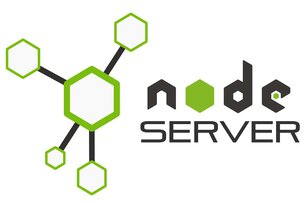

Publié le 14 juin 2018
JavaScript was introduced in 1995 as a way to add programs to web pages in the Netscape Navigator browser.
The language has since been adopted by all other major graphical web browsers.
It has made modern web applications possible—applications with which you can interact directly,
without doing a page reload for every action. But it is also used in more traditional websites to provide
various forms of interactivity and cleverness.

Publié le 14 juin 2018
Dans un précédent podcast on s'était intéressé au métier de développeur web de manière générale mais aujourd'hui je voulais me focaliser sur le statut de freelance en particulier. Plutôt que de faire une longue explication sur le statut, mon expér...
Publié le 14 juin 2018
Dans un précédent podcast on s'était intéressé au métier de développeur web de manière générale mais aujourd'hui je voulais me focaliser sur le statut de freelance en particulier. Plutôt que de faire une longue explication sur le statut, mon expér...